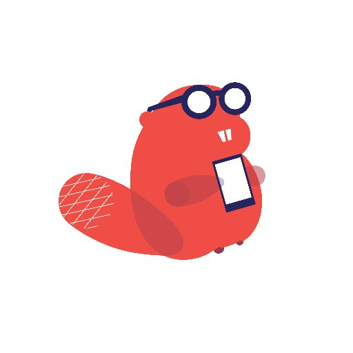
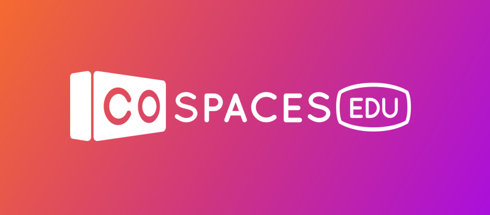
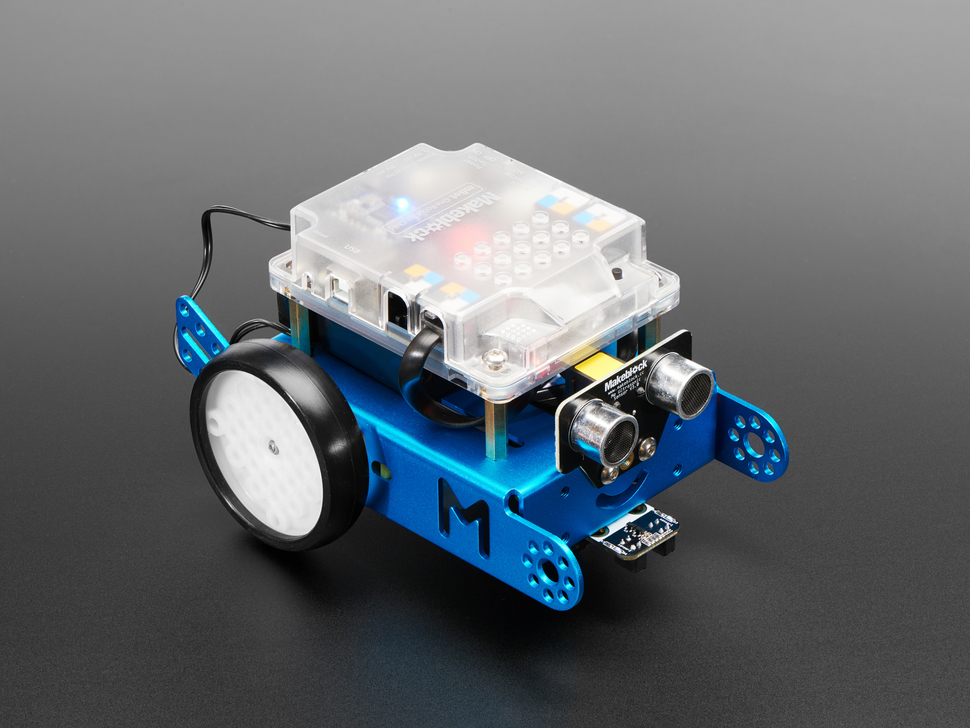

|
|
I have done Scratch before. I also learnt about variables. |  | I created a Cafe Manager app in Thunkable that lets you take people's orders. |
|  | I learnt how to make VR projects with CoSpaces. |  | I programmed the mBot to follow lines and grab objects with an arm attachment. |